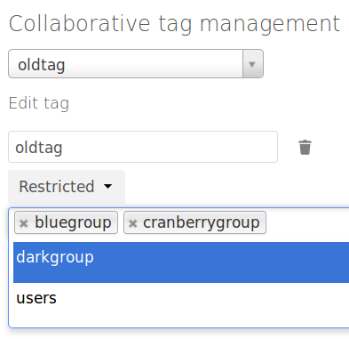
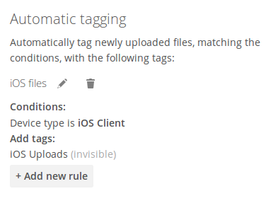

Advanced File Tagging With the Workflow App¶
The Workflow App provides advanced management of file tagging. The app has three parts: Tag Manager, Automatic Tagging, and Retention.
The Workflow App should be enabled by default (Apps page), and the three configuration modules visible on your ownCloud Admin page.
See Tagging Files in the ownCloud User manual to learn how to apply and filter tags on files.
Tag Manager¶
The Tag Manager is for creating new tags, editing existing tags, and deleting tags. Tags may be marked as Visible, Restricted, or Invisible.
Visible means that all users may see, rename, and apply these tags to files and folders.
Restricted means tags are assignable and editable only to the user groups that you select. Other users can filter files by restricted tags, but cannot tag files with them or rename them. The tags are marked (restricted).
Invisible means visible only to ownCloud admins.
Use the Collaborative tag management module on your ownCloud admin page to edit and create tags.

This is what your tags look like in the Tags view on your files page. Non-admin users will not see invisible tags, but they will see visible and restricted tags.

Automatic Tagging¶
The Automatic Tagging module operates on newly-uploaded files. Create a set of conditions, and then when a file or folder matches those conditions it is automatically tagged. The tag must already have been created with the Tag Manager.
For example, you can assign the invisible tag iOS Uploads to all files uploaded from iOS devices. This tag is visible only to admins.

When files with this tag are shared with you, you can view them with the Tags filter on the Files page.

Automatic Tagging is especially useful with the Retention module.
Retention¶
The Retention module is your housecleaning power tool, because it automatically deletes files after a time period that you specify. Select which tag to set a time limit on, and then set your time limit. File age is calculated from the file mtime (modification time).

For best performance, retention tags should be applied high in your file hierarchy. If subfolders have the same tags as their parent folders, their tags must also be processed, so it will take a little longer.
Retention Engines¶
There are two retention engines that further allow you to fine-tune your retention settings: TagBasedRetention and UserBasedRetention. TagBasedRetention is the default.
TagBasedRetention: This checks files that have a particular tag assigned. Then it checks (depth-first) the children of the tagged item, before continuing with the other tagged items. Children that have already been checked will not be checked a second time.
This is optimised for processing smaller numbers of files that have multiple retention tags.
UserBasedRetention: Examines files per user. It first iterates over all files and folders (siblings first), then examines the tags for those items and checks their respective retention periods. This is optimised for many files with few retention tags.
To select UserBasedRetention, add this line to your ee.config.php:
'workflow.retention_engine' => userbased,